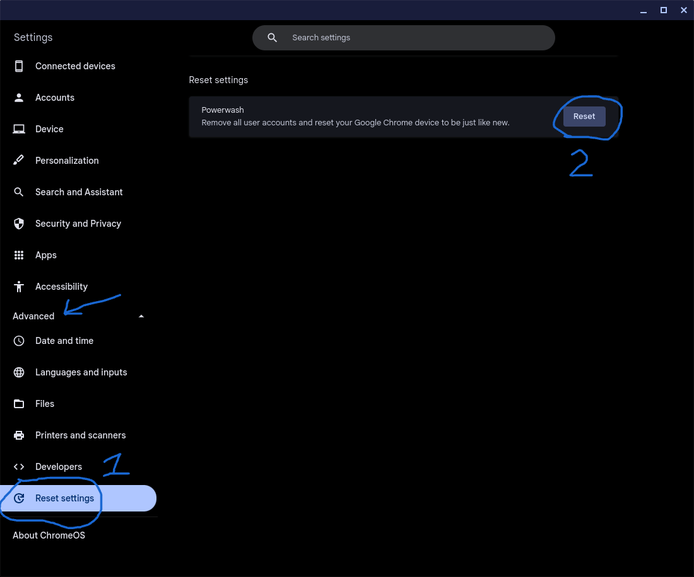

Warning: Following this guide WILL DELETE ALL LOCAL DATA AND ACCOUNTS FROM YOUR DEVICE.
Warning 2: Follow this guide thoroughly and make sure all requirements are met to reduce the risk of bricking your Chromebook.
Warning 3: DO NOT FOLLOW THIS GUIDE IF YOU ARE PLANNING TO USE A SCHOOL OR ORGANIZATION OWNED DEVICE!
Note: The term ’’powerwash’’ refers to just removing local accounts and data from your Chromebook. The term ’’recover’’ refers to removing all local accounts and data from your Chromebook, as well as removing the Chrome OS install and puts in a fresh one.
This guide will show you how to Powerwash and/or Recover your Chromebook. This guide will help you solve a variety of issues, including but not limited to, parental controls, enterprise enrollment, system file corruption, app corruption, random chrases, random reboots, etc., Note that recovering your Chromebook is risky, if you don’t think you can do it, try powerwashing it or contact a computer repair shop to have it done professionally.
Warning: If you are trying to recover your Chromebook and have a MediaTek or a Snapdragon CPU, you may not be able to make a recovery drive for your Chromebook, STOP NOW. Try powerwashing your computer instead. If you are just trying to Powerwash your Chromebook, you may continue.
Warning 2: Some Chromebooks ❪ with Intel/AMD x86 processors❫ may not be able to get a recovery image, this will be explained later, but if your Chromebook doesn’t have recovery image support STOP and only try to powerwash your Chromebook. If the issues persist, get a new computer or have your Chromebook professionally serviced.
Note: We will not support you in physically servicing your Chromebook, we only help you navigate, modify, and troubleshoot the software on your Chromebook.
Important Warning: Following this guide WILL REMOVE ANY LOCAL FILES OR DATA, your Google account will retain its data, but it may not remember your device so you will have to log in again. The removal of local files and other data is normal and part of the process. Before proceeding with the guide, backup to an external USB or SD drive and to the cloud ❪ Drive, Google 1, Dropbox, etc.,❫ any file❪s❫ you wish to keep. If you choose not to back up your files, they will NOT be recoverable after this process.
Before you do anything to your Chromebook, you must look at the problems that are actively occurring. ❪TLDR, look at the issues on your computer❫.
If you only need to Powerwash your Chromebook, the most common causes are low storage, some apps have strange errors, and/or your device has parental controls or has been enterprise enrolled causing you not to be able to do certain things. Note: If you are experiencing full system crashes or random apps and files are going missing being deleted you need to recover your Chromebook, powerwashing may not help.
Low Storage ❪This would make your computer slow, especially if you have less than 5gb available❫, another solution is only available if this is the only issue you are experiencing, which is deleting photos, videos, apps, etc., you don’t need.
Strange App Errors (Suitable internet connection is available but, the app thinks it is offline) this could be in the form of random crashes or getting stuck on loading screens as well as many other annoying issues.
Parental Controls/Enterprise Enrollment ❪would say somewhere in the Chrome browser; usually in the menu that pops up under the three stacked dots in the top right corner❫ that the device is managed by your organization or by your parent.
Recovery is the way you reinstall Chrome OS on your Chromebook. This can fix persisting issues with the whole computer freezing or chrashing randomly. There is a greater risk of pernamently bricking your Chromebook if you go down this route. FOLLOW THIS GUIDE THUOUGHLY, DO NOT IGNORE WARNINGS, AND DO NOT TRY TO DO ANYTHING OTHER THAN WHAT THE GUIDE TELLS YOU TO DO!
Note: We are not responsible for any unexpected data or property loss, only recover your Chromebook if powerwashing didn't fix it.
Note 2: If recovering your Chromebook doesn’t fix your device, you need to have it physically serviced. There may be an issue with various components ❪storage, ram, cpu, etc,.❫, so you need to take it to a computer repair shop. ❪A guide to picking the right repair shop will be made soon❫.
Note 3: Try powerwashing your Chromebook first; maleware, spyware, virus, and/or corruption affecting one or more of your apps may be causing the problem.
There are two ways to powerwash your Chromebook. The first one involves going to settting to do this, but if your device has parental or orgazational controls this will not work. The other option is to go through the firmware to erase any local accounts or data.
Warning: Following this guide erase all local accounts and data from your device! Back up any important data, use a usb flash drive, google drive, or any other cloud storage solution.
Note: Use this if you don't have parental/organizational controls. If you do, use the other method below.
Open Chrome OS settings and navigate over to, ’’Reset Settings’’. Click on reset and follow the instructions. Once your Chromebook has rebooted, log in and go to this option again in settings and click, ’’reset’’. Allow the Chromebook to reset and set up the Chromebook for personal use. Make a new Gmail or use one that doesn't have parental or school restrictions. Do not use a school email, or another email that you don't own.
Step 1: Press Esc+Refresh+Power ❪power button❫.
Step 2: Use the arrow keys to select, ’’advanced options’’ and press enter.
Step 3: Enable Developer Mode, and follow instructions to continue with Developer Mode.
Step 4: When your Chromebook boots up a again use the arrow keys to select, ’’Return to secure mode’’ and press enter.
Step 5: Set up your Chromebook for personal use. Make a new Gmail or use one that doesn't have parental or school restrictions. Do not use a school email, or another email that you don't own.
Warning: Following this guide erase all local accounts and data from your device! Back up any important data, use a usb flash drive, google drive, or any other cloud storage solution.
Step 1: Get the Chromebook Recovery Utility. Click this link using the Chrome browser that came original with your Chromebook. Select add to Chrome, and allow it to install.
Note: If parental or organizational controls are blocking you from getting this extension, you need to powerwash your Chromebook first to remove the blocks.
Note 2: If you need to backup your data, do it now, don't use the recovery drive, use a seperate USB or SD storage drive to copy your photos on to. Once it's done, eject it and remove it from your Chromebook.
Step 2: Find out what make and model of Chromebook you have. Do this by flipping the laptop over, and look for the model number. Google the model number, the search results should tell you what brand you have and it should tell you the model and submodel. For instance I have a Lenovo Flex 5 13.3" Chromebook.
Step 3: Open the recovery tool and insert a 8GB+ USB or SD storage drive. Click on next and then select the brand of your Chromebook. Scroll through the models until you find the one that matches your device ecactly. If you can’t find it STOP NOW!
Step 4: If you can get the correct recovery image, click on next. Select your storage drive and allow it to burn the recovery image in to it.
Step 5: Once its done, eject the drive and remove it from your Chromebook. Press esc+reload+power and wait for the recovery screen to appear.
Step 6: Use the arrow keys to select, ’’Recover Using external storage’’ and press enter.
Step 7: Plug in your Chromebook using the charger that came with it. Press enter until it asks you for the recovery drive.
Step 8: Insert the recovery drive and press enter. Follow the instructions. Do not interupt this process! Doing so WILL BRICK YOUR DEVICE! Give your Chromebook plenty of time to finish! Do not unplug it!
Step 9: Once your Chromebook finishes, set it up for personal use. Make a new Gmail or use one that doesn't have parental or school restrictions. Do not use a school email, or another email that you don't own.